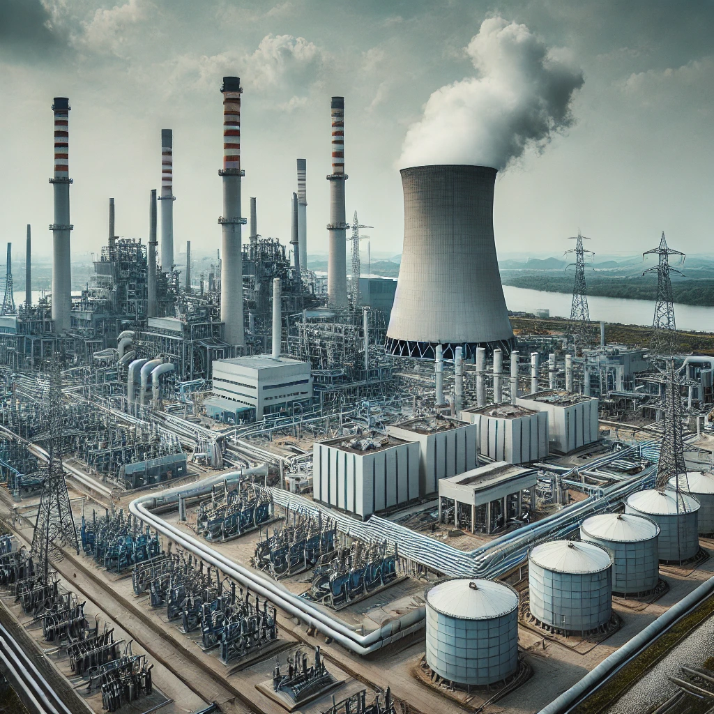

O que é Geração de Energia Termoelétrica?
A energia termoelétrica é gerada através da queima de combustíveis fósseis, como carvão, gás natural e petróleo, para aquecer água e produzir vapor que movimenta turbinas.
Vantagens
- Funciona em qualquer condição climática
- Menor dependência de fatores naturais
Desvantagens
- Emissão de gases poluentes
- Dependência de combustíveis fósseis
